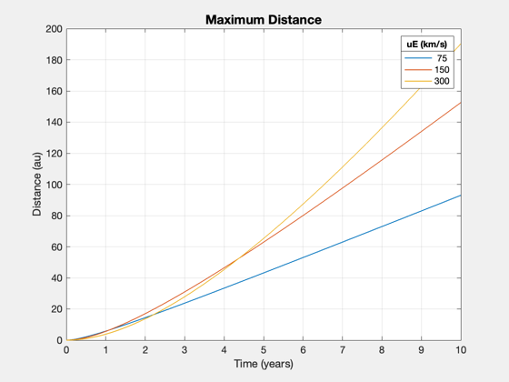
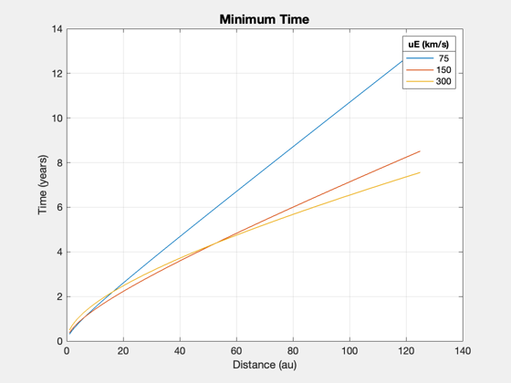
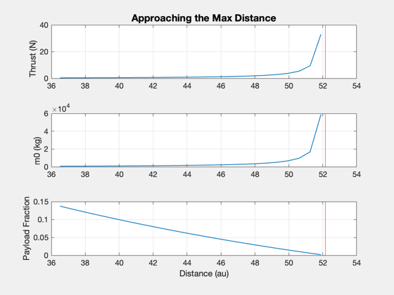
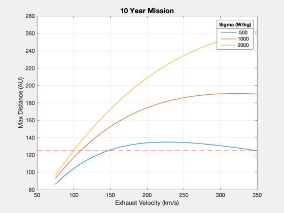
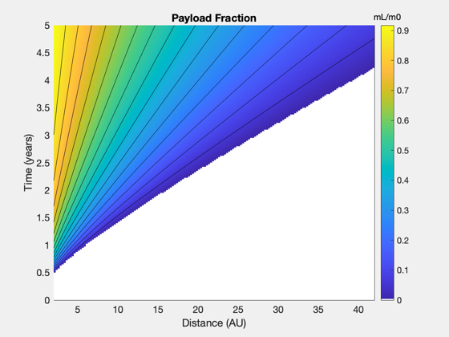
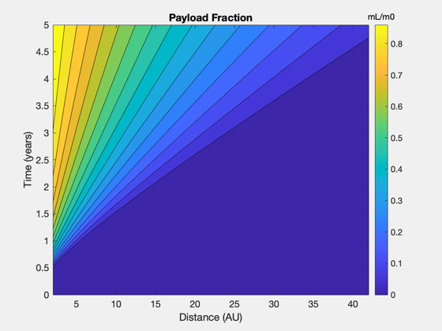
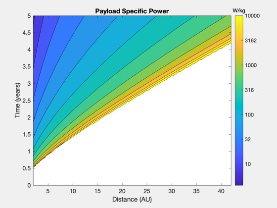
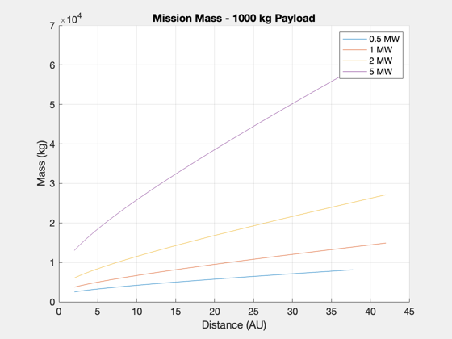
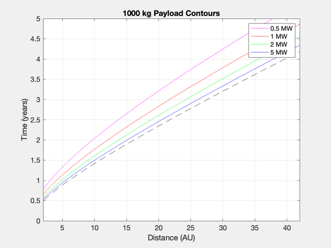
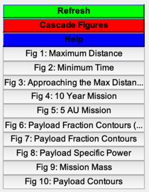

Contents
- Demo of the mimimum time and maximum distance straight-line functions.
- Engine and mission parameters
- Maximum distance from a fixed time
- Minimum time for a fixed distance
- Select a time and make plots for payload
- Mission with exhaust velocity
- Select a distance and make plots
- Distance and time surfaces - payload fraction and specific power
- Payload mass contours with power levels
Demo of the mimimum time and maximum distance straight-line functions.
For a given set of engine parameters, there are limits to what can be achieved for a straight-line mission, which is defined by a distance and a time to get there. This is a comprehensive set of demos of the straight-line functions.
------------------------------------------------------------------------ See also: ZeroPayloadDistance, ZeroPayloadTime, ComputeThrust, ComputePayloadFraction, EnginePower ------------------------------------------------------------------------
%-------------------------------------------------------------------------- % Copyright (c) 2018 Princeton Satellite Systems, Inc. % All rights reserved. %--------------------------------------------------------------------------
Engine and mission parameters
specific power, W/kg
sigma = 1000; % structural fraction, kg tank/kg fuel f = 0.05; % thrust efficiency eta = 0.4; % exhaust velocity (km/s) uE0 = 100; au = Constant('au'); year = 365.25*86400; uEs = [75 150 300]; tFs = linspace(0,10,101); d0s = linspace(1,125,125); d = Straight2DStructure; d.eta = eta; d.f = f; d.sigma = sigma; d.tF = year; d.dF = 5*au; d.mP = 100;
Maximum distance from a fixed time
dMax = []; for k = 1:length(uEs) dMax(k,:) = ZeroPayloadDistance( tFs*year, uEs(k), sigma, eta, f ); end Plot2D(tFs,dMax/au,'Time (years)','Distance (au)','Maximum Distance'); ll = legend(num2str(uEs')); ll.Title.String = 'uE (km/s)';
Minimum time for a fixed distance
tFv = zeros(length(uEs),length(d0s)); for k = 1:length(uEs) tFv(k,:) = ZeroPayloadTime( d0s*au, uEs(k), sigma, eta, f ); end Plot2D(d0s,tFv/year,'Distance (au)','Time (years)','Minimum Time'); ll = legend(num2str(uEs')); ll.Title.String = 'uE (km/s)';
Select a time and make plots for payload
d.tF = 5*year; d.uE = uE0; dM = ZeroPayloadDistance( d ); dFs = linspace(0.7,0.995,25)*dM; thrust = zeros(1,length(dFs)); m0 = zeros(1,length(dFs)); for k = 1:length(dFs) d.dF = dFs(k); thrust(k) = ComputeThrust( d ); m0(k) = InitialMass( thrust(k), d ); end Plot2D(dFs/au,[thrust;m0;d.mP./m0],'Distance (au)',{'Thrust (N)','m0 (kg)','Payload Fraction'},'Approaching the Max Distance') subplot(3,1,1) hold on; yy = axis; plot(dM/au*[1 1],yy(3:4),'r-') subplot(3,1,2) hold on; yy = axis; plot(dM/au*[1 1],yy(3:4),'r-') subplot(3,1,3) hold on; yy = axis; plot(dM/au*[1 1],yy(3:4),'r-')
Mission with exhaust velocity
uEv = linspace(75,350,50); tF = 10*year; dUe = []; sigmas = [500 1000 2000]; for j = 1:3 for k = 1:length(uEv) dUe(j,k) = ZeroPayloadDistance( tF, uEv(k), sigmas(j), eta, f ); end end Plot2D(uEv,dUe/au,'Exhaust Velocity (km/s)','Max Distance (AU)','10 Year Mission') hold on; yy = axis; plot(yy(1:2),125*[1 1],'r--') ll = legend(num2str(sigmas')); ll.Title.String = 'Sigma (W/kg)';
Select a distance and make plots
dF = 5*au; % Jupiter mission sigma = 1000; tMin = ZeroPayloadTime( dF, uE0, sigma, eta, f ); tVec = linspace(1.05*tMin,2*tMin); d.dF = dF; d.mP = 1000; m0 = []; thrust = []; lambda = []; alpha = []; m0 = []; for k = 1:length(tVec) d.tF = tVec(k); [lambda(k),alpha(k)] = ComputePayloadFraction( d ); thrust(k) = ComputeThrust( d ); m0(k) = InitialMass( thrust(k), d ); end powers = EnginePower( thrust, d ); Plot2D(tVec/year,[powers*1e-6;m0*1e-3;d.mP./m0],'Time (years)',{'Power (MW)','m0 (MT)','Payload Fraction'},'5 AU Mission') %gtext('Payload mass: 1000 kg')

Distance and time surfaces - payload fraction and specific power
Planetary system - to 40 AU
uE = uE0; tFs = linspace(0,5,201); d0s = linspace(2,42,161); lambdas = zeros(length(tFs),length(d0s)); alpha = zeros(length(tFs),length(d0s)); tFmin = []; for j = 1:length(tFs) for k = 1:length(d0s) d.dF = d0s(k)*au; tMin = ZeroPayloadTime( d.dF, uE, sigma, eta, f ); if tFs(j)*year>tMin d.tF = tFs(j)*year; [lambdas(j,k),alpha(j,k)] = ComputePayloadFraction( d ); end if j == length(tFs) tFmin(k) = ZeroPayloadTime( d.dF, uE, sigma, eta, f ); end end end NewFig('Payload Fraction Contours (pcolor)'); pc = pcolor(d0s,tFs,lambdas); pc.EdgeColor = 'none'; hold on; contour(d0s,tFs,lambdas,15,'k-'); xlabel('Distance (AU)') ylabel('Time (years)') cb = colorbar; cb.Title.String = 'mL/m0'; title('Payload Fraction') cmap = get(gcf,'colormap'); cmap(1,:) = [1 1 1]; set(gcf,'colormap',cmap); NewFig('Payload Fraction Contours'); contourf(d0s,tFs,lambdas,15) xlabel('Distance (AU)') ylabel('Time (years)') title('Payload Fraction') cb = colorbar; cb.Title.String = 'mL/m0'; zeta = 1./alpha; zeta(zeta==inf) = 0; NewFig('Payload Specific Power'); [c,h] = contourf(d0s,tFs,log10(zeta),linspace(0,4,15)); ylabel('Time (years)') xlabel('Distance (AU)') title('Payload Specific Power') cb = colorbar; %cb.Limits = [cb.Limits(1) 4]; cb.Title.String = 'W/kg'; for k = 1:length(cb.Ticks) cb.TickLabels{k} = num2str(10^cb.Ticks(k),'%.0f'); end  
Payload mass contours with power levels
question: how to plot mission mass
h2 = NewFig('Mission Mass'); a2 = axes; hold on; grid on; NewFig('Payload Contours'); plot(d0s,tFmin/year,'k--'); hold on; grid on; mP0 = 1000; Ps = [0.5 1 2 5]*1e6; alphas = mP0./Ps; colors = 'mrgb'; h = []; for j = 1:length(Ps) [c,h(j)] = contour(d0s,tFs,alpha*Ps(j),mP0*[1 1],['-' colors(j)]); lambdav = alphas(j) ./ (1/d.sigma + alphas(j) + (1+d.f)*c(2,2:end)*year*2*d.eta/(uE*1e3)^2); m0v = mP0./lambdav; % could I plot this on a second y axis? plot(a2,c(1,2:end),m0v); end xlabel('Distance (AU)') ylabel('Time (years)') title('1000 kg Payload Contours') legend(h,'0.5 MW','1 MW','2 MW','5 MW') xlabel(a2,'Distance (AU)') ylabel(a2,'Mass (kg)') title(a2,'Mission Mass - 1000 kg Payload') legend(a2,'0.5 MW','1 MW','2 MW','5 MW') Figui; %-------------------------------------- % $Id: 42e328e6a2cbbc42da9ba99cc1127f3adbe52a57 $  